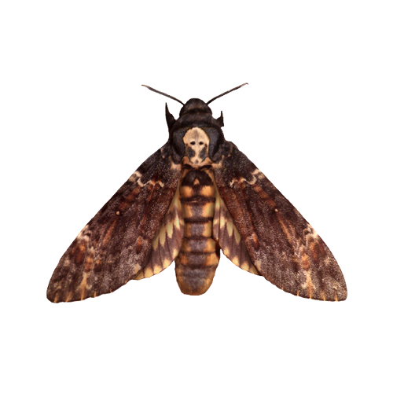

The African death's-head hawkmoth (Acherontia atropos) is a large hawk moth, the largest moth in the British Isles and several other regions it inhabits, with a wingspan of 5 in (13 cm) (or 80–120 mm); it is a powerful flier, having sometimes been found on ships far from land. The forewings are a mottled dark brown and pale brown, and the hind wings are orangey buff with two narrow dark bands parallel with the hind margin. The abdomen is a similar orangey-brown, with a broad, dark dorsal stripe. The most notable feature is a patch of short yellowish hairs on the thorax that gives the impression of depicting a human skull. It is a striking insect, but is seldom seen because it flies late in the night.
Its wing and body structure is typical of that seen in the family Sphingidae. The upper set of wings are brown with hints of yellow, amber, charcoal and cream; the lower wings are yellow with two brown stripes fashioned in waves extending diagonally across the surface. At rest, the wings of the moth fold downwards, concealing the hindwings behind the forewings. The abdomen of A. atropos is robust and is covered in brown, feathery down. Yellow striping that highly resembles the colour patterns of a hornet extends part way across each abdominal segment. The intensity and distribution of colour can vary widely in individual specimens, with some individuals occasionally found expressing an indistinguishable "skull-like" pattern on the thorax. A 2020 study describes how, when viewed upside-down, Acherontia atropos creates an illusion of a head with eyes: the mark on its thorax likened to a human skull is the "nose", with the skull's eye-sockets resembling nostrils.
Spots on its forewings can be seen as eyes, and various other markings and features can be interpreted as ears, muzzle, and lips. This illusion is also present in Agrius convolvuli (convolvulus hawkmoth) and five other species, with the study author suggesting that the function of the illusion of an eyed head is "almost certainly to deter, distract or otherwise deceive predators".
The species shows sexual dimorphism, as in most Lepidoptera. Female moths of this species tend to be larger than males, appearing bulkier and sporting larger, more robust abdomens. The abdomen of a male Acherotia atropos is less broad, with a pointed distal (lower) abdominal segment. In contrast, the females of the species have a distal abdominal segment that is rounded off at the tip. Antennae seen on a male are thinner and shorter than the antennae seen on a female. There are no pattern or colour changes related to the sex of an A. atropos.
The caterpillar of the African death's-head hawkmoth is also sturdy and somewhat vaiable in colour, being some shade of buff, green or brown, with seven diagonal blue lines. At the rear is a curved, thorn-like horn. It can attain a length of 5 to 6 in (13 to 15 cm). The other two species of death's-head hawkmoth similarly have three larval color forms: typically, green, brown and yellow. The pupa is stout and reddish-brown and is formed 8 to 10 in (20 to 25 cm) under the ground in a chamber the size of a large hen's egg.